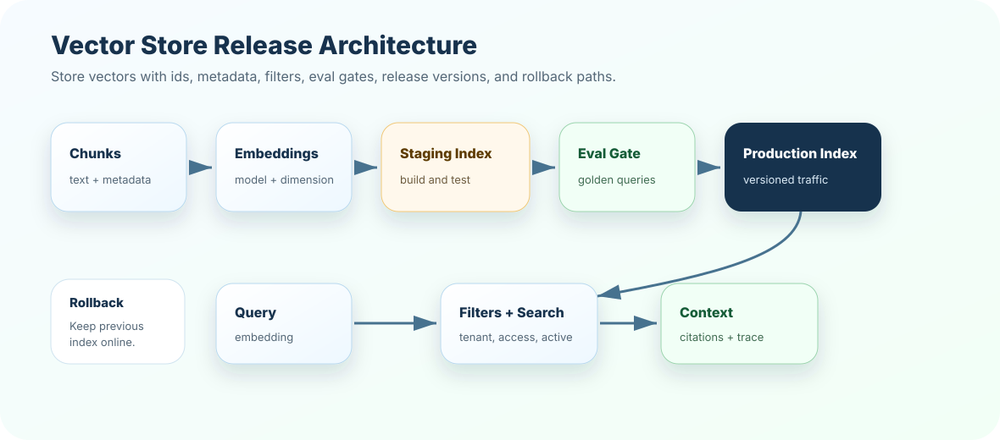

Storing vectors without source text
Symptom: retrieval returns ids but the system cannot assemble grounded context.
Better move: store text or reliable source pointers with every vector.
A vector store is not just a database for embeddings. In production RAG, it is the retrieval control plane: ids, metadata, collections, index versions, filters, refreshes, rebuilds, and release strategies all decide whether the right evidence reaches the model.
In a demo, you can throw vectors into memory and search them. In production, users ask sensitive questions, documents update, permissions change, models evolve, and old policies must disappear. The vector store becomes part of your product's safety and reliability story.
The goal is not only fast nearest-neighbor search. The goal is trustworthy retrieval operations.
Separate tenants, environments, domains, model dimensions, and release versions when needed.
Chunk ids should connect to source id, version, section, parent, and index release.
Access, freshness, source type, owner, effective date, and status power safe filters.
New indexes should pass golden queries before traffic shifts.
A warehouse is only useful if items are stored with labels, locations, categories, batch numbers, and expiry dates. If everything is thrown into one pile, you technically have storage, but you do not have operations.
A vector store works the same way. The vector is the item location in meaning space. Metadata is the label. The collection is the warehouse section. The index is the route map. The release version is the batch record.
The numeric vector used for similarity search.
The chunk content returned to the prompt after retrieval.
Structured fields used for filters, permissions, citations, freshness, and debugging.
{
"id": "refund_policy:v3:section_04:chunk_02",
"text": "EU annual plan renewals are refundable within...",
"embedding": [0.018, -0.223, ...],
"metadata": {
"source_id": "refund_policy",
"version": "v3",
"status": "active",
"region": "EU",
"access": "support",
"effective_date": "2026-04-01",
"embedding_model": "embed-model-a",
"index_version": "refund-index-2026-07-11"
}
}A collection groups vectors that share a compatible shape and retrieval purpose. Do not treat collection design casually.
Keep experimental indexes away from production traffic.
Strict tenant separation can simplify access control and deletion.
Collections usually assume one vector dimension and model family.
Domain collections can improve ownership and targeted rebuilds.
Vector indexes trade recall, speed, memory, and complexity. The names differ by database, but the production questions are similar.
Compares query vector against every vector. Simple and accurate, but slow at large scale.
Uses structures such as HNSW or IVF-style approaches to search faster with possible recall trade-offs.
Combines dense vector search with sparse keyword search, filters, or reranking.
A low-latency approximate index that misses critical policy chunks is not better than a slower index that answers correctly. Measure recall and latency together.
source change
-> parse and clean
-> chunk
-> embed
-> upsert to staging index
-> run retrieval evals
-> promote index version
-> monitor production traces
-> roll back if neededRefreshing an index is not just "insert new vectors." You need clear decisions for updates, deletes, stale chunks, failed embedding jobs, partial rebuilds, and index promotion.

user question
-> query embedding
-> metadata filters
-> vector search
-> optional sparse / hybrid merge
-> rerank
-> context assembly
-> citation and traceSimple, but risky if rebuild goes wrong or partial updates leak into production.
Run evals on green, then switch traffic when ready. Safer for major changes.
Run the new index against real queries and compare results before rollout.
Expose a small percentage of traffic and monitor failures before full release.
Recall@k, MRR, gold chunk rank, citation support, duplicate rate, stale-hit rate.
Index build duration, upsert failures, delete lag, embedding failures, dimension mismatches.
Query latency, filter selectivity, timeout rate, top-k distribution, empty result rate.
A strong answer sounds like this: "A vector store stores embeddings with ids, source text, metadata, and index structures for similarity search. In production, I design collections by dimension, tenant, domain, and environment, enforce metadata filters, version index releases, and use blue-green rebuilds with retrieval eval gates."
A demo says "we put embeddings in a vector DB." Production says "we can explain every retrieved chunk, filter unsafe chunks, rebuild safely, compare versions, and roll back if retrieval quality drops."
Design a vector-store schema for a policy assistant. Include collection boundaries, id format, required metadata, index release strategy, delete behavior, and five metrics you would monitor after release.
Next, test vector-store judgment in the quiz, then build an index release planner in exercises and project.